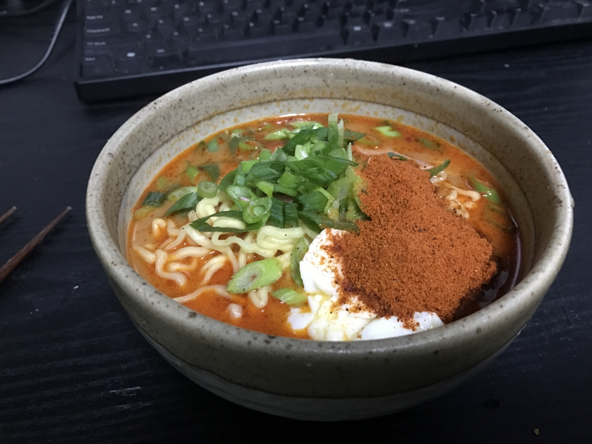
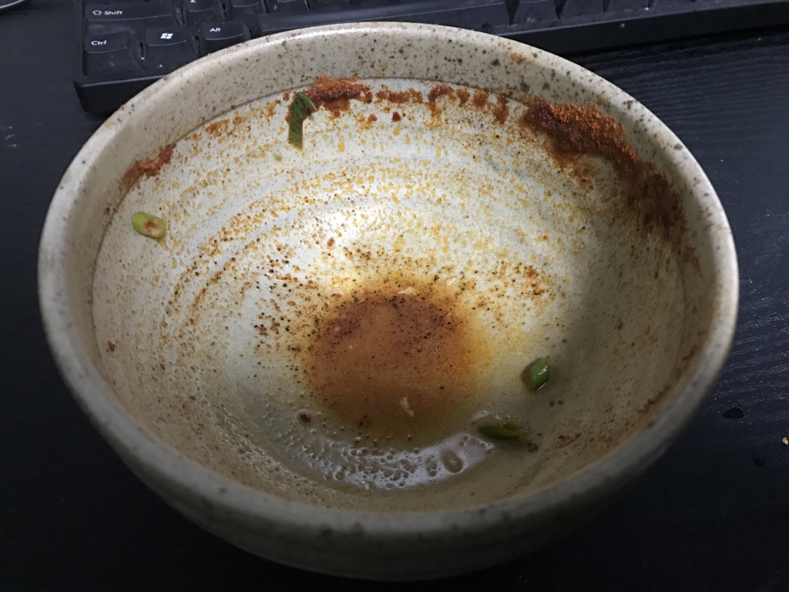

風邪ひいて死にかけてたら、辛辛魚が送られてきた。
公開日：
今週はずっと風邪気味。頭はしっかりしているのだけど、6度8分程度の微熱（平熱は5度台）と咳が止まらない。体も動くし食欲はあるのでご飯は作るけれど、外に出るほどの元気はなく、冷蔵庫の在庫でレシピをやりくりする毎日だった。そこへ、ヤツが現れた。
@daruyanagi 今日家におんの？
— しばやん (@shibayan) 2017年1月10日
――嫌な予感しかしない。
数日後、やっぱりロクでもないものが我が家に届いた。

寿がきや 井の庄監修 辛辛魚ラーメン 辛辛MAXバージョン 135g×10袋
- 出版社/メーカー: 寿がきや食品
- メディア: 食品&飲料
- この商品を含むブログを見る
なんやこれ生命の危険感じる pic.twitter.com/Gm3VUY6Iz4
— だるやなぎ（プレーン味） (@daruyanagi) 2017年1月12日
冷蔵庫の中身が心もとなくなってきていたので、ありがたくはあるのだが……。
風邪でしんどいのに辛辛魚たべなきゃいけないなんて、俺の運命も過酷やな
— だるやなぎ（プレーン味） (@daruyanagi) 2017年1月12日
というわけで、早速昨日食べてみた。

チャーシューなんかないので、ベーコンで代用。あとはネギを刻み、タマゴをぶち込んだ。後入れの粉を忘れてて、具材をトッピングした後に入れざるを得なかったので、見栄えは悪い。しっかりかき混ぜて、粉をスープになじませると、鼻孔をえもいわれぬカラカラ臭が突き刺す。後入れの粉は入れずに食べたほうが幸せだったかもしれんな。
でも、味はまぁまぁ。とくに麺は好きかも。スープが無駄に辛いせいか、すごく甘みを感じるよね。ベーコンをもしゃもしゃするときも、オアシス感がある。あと、もやしとか入れてみてもいいなと思った。辛味から逃避先をたくさんトッピングしないと、途中から食べるのが辛くなる。

それでもなんとか完食。その日の間は大丈夫だったけど、翌朝早く飛び起きて、トイレでうんうん唸る羽目になりました。お尻の穴が熱いでござる……熱いでござる……。
あと9袋あるんだけど、ほんと死にたい。